9
580 fiches en français pour le niveau 9, prêtes à imprimer et avec corrigé.
580 ressources
Thème
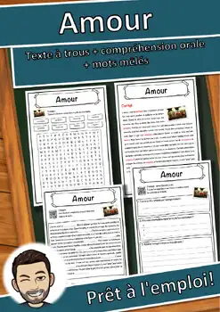
Amour – Compréhension de lecture : texte à trous, écoute et mots mêlés
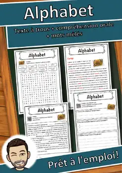
Alphabet – Compréhension de lecture : texte à trous, écoute et mots mêlés
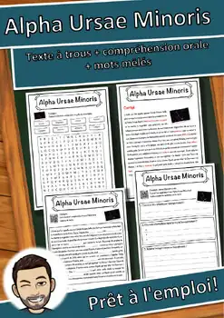
Alpha Ursae Minoris – Texte à trous, compréhension orale et mots mêlés
Allemand – Compréhension de lecture : texte à trous, écoute et mots mêlés
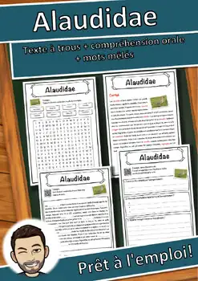
Alaudidae – Compréhension de lecture : texte à trous, écoute et mots mêlés
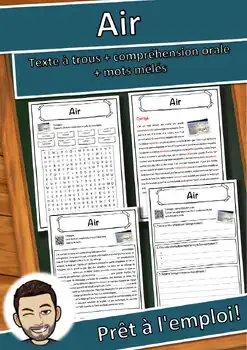
Air – Compréhension de lecture : texte à trous, écoute et mots mêlés
Aimant – Compréhension de lecture : texte à trous, écoute et mots mêlés
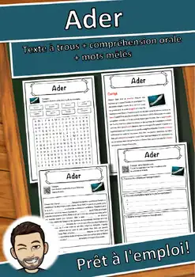
Ader – Compréhension de lecture : texte à trous, écoute et mots mêlés
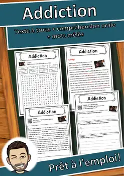
Addiction – Compréhension de lecture : texte à trous, écoute et mots mêlés
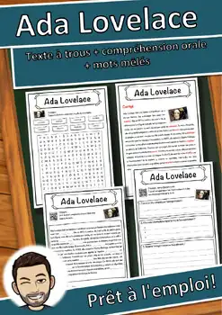
Ada Lovelace – Compréhension de lecture : texte à trous, écoute et mots mêlés
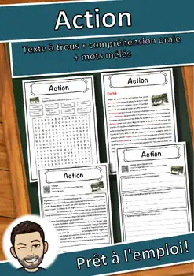
Action – Compréhension de lecture : texte à trous, écoute et mots mêlés
Actinium – Compréhension de lecture : texte à trous, écoute et mots mêlés
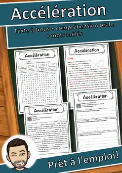
Accélération – Compréhension de lecture : texte à trous, écoute et mots mêlés
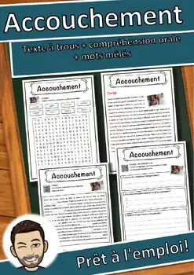
Accouchement – Compréhension de lecture : texte à trous, écoute et mots mêlés
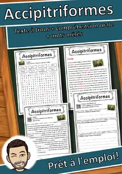
Accipitriformes – Compréhension de lecture : texte à trous, écoute et mots mêlés
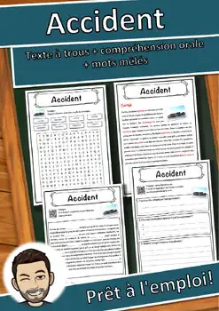
Accident – Compréhension de lecture : texte à trous, écoute et mots mêlés
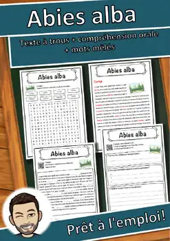
Abies alba – Compréhension de lecture : texte à trous, écoute et mots mêlés

Ville fantôme – Compréhension de lecture : texte à trous, écoute et mots mêlés
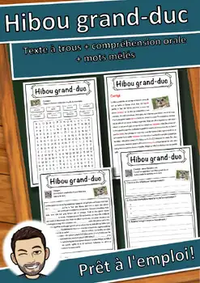
Hibou grand-duc – Compréhension de lecture : texte à trous, écoute et mots mêlés
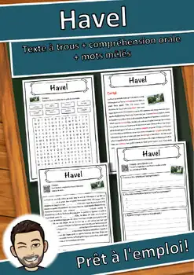
Havel – Compréhension de lecture : texte à trous, écoute et mots mêlés
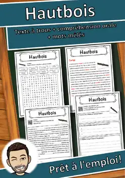
Hautbois – Compréhension de lecture : texte à trous, écoute et mots mêlés
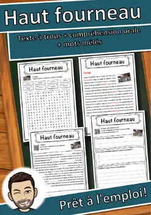
Haut fourneau – Compréhension de lecture : texte à trous, écoute et mots mêlés
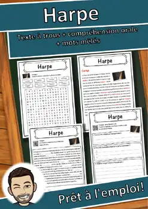
Harpe – Compréhension de lecture : texte à trous, écoute et mots mêlés
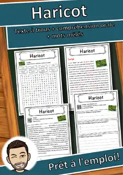
Haricot – Compréhension de lecture : texte à trous, écoute et mots mêlés
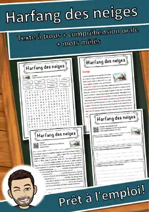
Harfang des neiges – Texte à trous, compréhension orale et mots mêlés
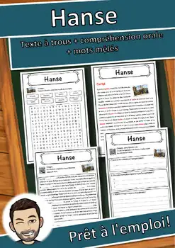
Hanse – Compréhension de lecture : texte à trous, écoute et mots mêlés
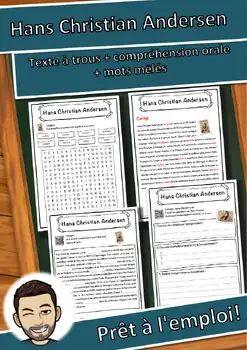
Hans Christian Andersen – Texte à trous, compréhension orale et mots mêlés
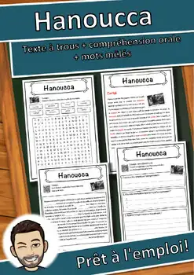
Hanoucca – Compréhension de lecture : texte à trous, écoute et mots mêlés

Handicap – Compréhension de lecture : texte à trous, écoute et mots mêlés

Handball – Compréhension de lecture : texte à trous, écoute et mots mêlés

Tours – Fiche de géographie : texte à trous, compréhension orale et mots mêlés

Hamster – Compréhension de lecture : texte à trous, écoute et mots mêlés

Limoges – Fiche de géographie : texte à trous, compréhension orale et mots mêlés

Hallig – Compréhension de lecture : texte à trous, écoute et mots mêlés
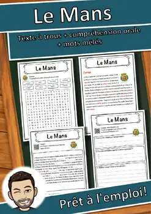
Le Mans – Fiche de géographie : texte à trous, compréhension orale et mots mêlés

Hafnium – Compréhension de lecture : texte à trous, écoute et mots mêlés

Caen – Fiche de géographie : texte à trous, compréhension orale et mots mêlés

Hadès – Compréhension de lecture : texte à trous, écoute et mots mêlés
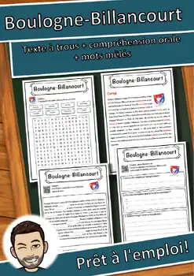
Boulogne-Billancourt – Fiche : texte à trous, compréhension orale et mots mêlés
Annecy – Fiche de géographie : texte à trous, compréhension orale et mots mêlés

Gênes – Compréhension de lecture : texte à trous, écoute et mots mêlés
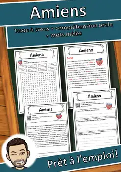
Amiens – Fiche de géographie : texte à trous, compréhension orale et mots mêlés

Guinée – Compréhension de lecture : texte à trous, écoute et mots mêlés
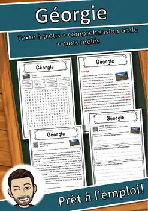
Géorgie – Compréhension de lecture : texte à trous, écoute et mots mêlés
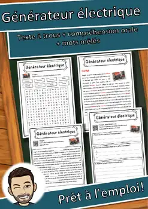
Générateur électrique – Texte à trous, compréhension orale et mots mêlés
Général – Compréhension de lecture : texte à trous, écoute et mots mêlés
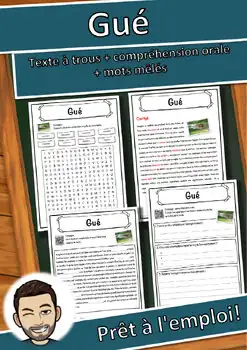
Gué – Compréhension de lecture : texte à trous, écoute et mots mêlés
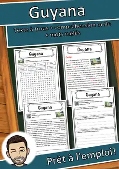
Guyana – Compréhension de lecture : texte à trous, écoute et mots mêlés
Aucune ressource trouvée – essaie un autre mot ou un autre filtre.